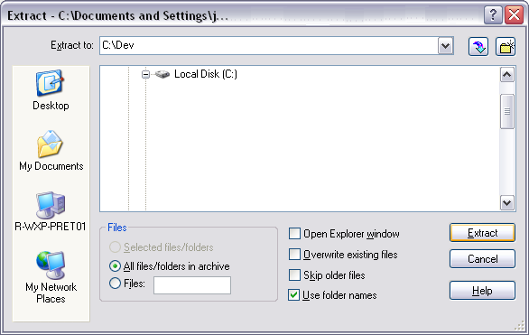

The Eclipse Platform is an open source framework. It is designed for building integrated development environments.
Mobile Widgets SDK provides an editor based on the Eclipse platform.
Note:
Mobile Widgets SDK requires Eclipse 3.5 or higher.
Go to Eclipse Downloads page ( http://www.eclipse.org/downloads/ ).
Select " Eclipse IDE for Java EE Developers " link.

" File download " dialog box is opened. Select " Save " button.

" Save As " dialog box is opened.
Choose " Desktop " without changing the name " eclipse-java-helios-SR1-win32.zip " in the textfield " File name: ".
Select " Save " button.

" Download complete " dialog box is opened. Select " Open " button.

" WinZip - eclipse-java-helios-SR1-win32.zip " dialog box is opened. Open " eclipse.exe " file.

" WinZip Caution " dialog box is opened. Select " Yes " button.
After file download, extract file on your hard drive.
Warning:
The folder tree where Eclipse is installed must not contain white spaces.
Mobile Widgets SDK does not support space in folder name.

Open Eclipse folder and launch eclipse.exe file to open Eclipse.
This part explains how to configure your proxy on Eclipse.
If you don't know what it is: see proxy definition.
If you don't use a proxy, go to the next part (Mobile Wingets SDK installation).
Launch Eclipse and open Preferences window (Window > Preferences menu).

Open the network connections page (General > Network connections).

Configure your proxy (select manual in active provider combo box and change connections configuration).
Click on OK button to save preferences and close Preferences window.
Warning:
Complete HTTP and HTTPS configuration lines ( SOCK is not required).